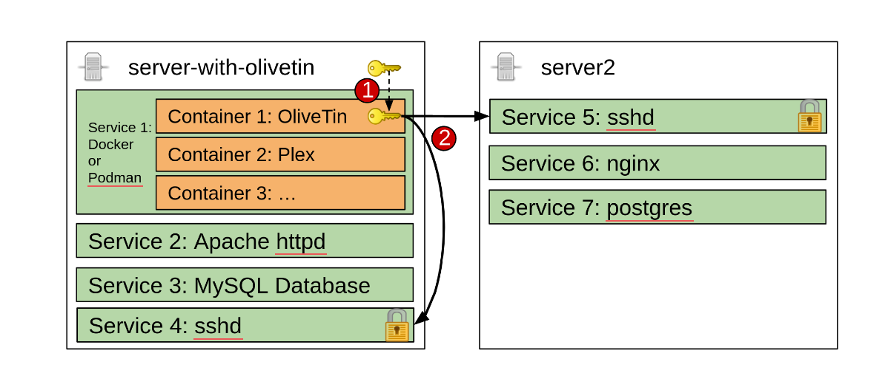

SSH (manual setup)
This is probably one of the most useful things OliveTin is used for - just plain old SSH, which allows it to easily connect from a container to any server running on your network to run commands. This is also the preferred method of running commands on the server that is hosting the OliveTin container image as well.
|
Note
|
There is an easy method of setting up SSH with OliveTin, which is described in the SSH (easy setup) section. This section is for those who want to set up SSH manually. |
| Installation type | Difficulty to do this |
|---|---|
Running as a Systemd service |
Easy |
Running in a container |
Needs some setting up - see the SSH Container setup instructions |
Example config.yaml
config.yamlactions:
# This will SSH into a server an run the command 'service httpd restart'
- title: Restart httpd on Server 1
shell: ssh root@server-with-olivetin 'service httpd restart'
icon: ping
timeout: 5Note about SSH keys: You should make sure that the user that OliveTin is running as has access to a SSH key. This applies to container images as well. The setup instructions below briefly explain how to generate a SSH key and make it accessible to OliveTin which is running inside a container.
SSH from inside a Container - setup instructions
This is a two step process;
Visually, this is what it looks like - OliveTin is running in the (orange) container, and then can either connect back to server-with-olivetin or server2.

The steps in detail are below;
Step 1: Give OliveTin a SSH key
Open a terminal window on server-with-olivetin.
-
Run
mkdir /opt/OliveTinSshKeysto create a shared directory for your SSH key file.This will later be used as a "volume mount" when you create a docker container.
-
Run
ssh-keygento generate a SSH key just for OliveTin.-
Enter the file in which to save the key:
/opt/OliveTinSshKeys/id_rsa -
Enter passphrase (empty for no passphrase):
<enter>This will create a passwordless SSH key that OliveTin can use. It is safe as long as nobody steals your SSH key file! OliveTin cannot enter passwords into SSH keys, so you have to leave the password blank.
-
-
You should get something that looks like this. If you get a "permission denied" error when creating files, try running
chmod 0777 /opt/OliveTinSshKeysand try again.root@server-with-olivetin: ssh-keygen Generating public/private rsa key pair. Enter file in which to save the key (/root/.ssh/id_rsa): /opt/OliveTinSshKeys/id_rsa Enter passphrase (empty for no passphrase): Enter same passphrase again: Your identification has been saved in /opt/OliveTinSshKeys/id_rsa Your public key has been saved in /opt/OliveTinSshKeys/id_rsa.pub The key fingerprint is: SHA256:t+vGUn+MTeOtRDpxKanO3Cg63+gvAHslZCe3YVNnfWU root@server-with-olivetin The key's randomart image is: +---[RSA 3072]----+ | .. o. E| | + * o ...| | o = + . | | . . o . . | | o oS . + + | | . o ..o *o | | . . oo.o*.o | | . +*o+oo= .| | .=+BX .... | +----[SHA256------+This will create two files,
/opt/OliveTinSshKeys/id_rsa(your private key) and/opt/OliveTinSshKeys/id_rsa.pub(your public key). -
Copy your public key to every server you want to connect to.
Using the
ssh-copy-idcommand is a really quick and safe way to do this.root@server-with-olivetin: ssh-copy-id -i /opt/OliveTinSshKeys/id_rsa.pub root@localhost (enter your SSH password) root@server2: ssh-copy-id ssh-copy-id -i /opt/OliveTinSshKeys/id_rsa.pub root@server2 (enter your SSH password)
You will be asked to login with a password for each server.
After you have done that, you will then be able to login with the ssh key instead. Here is a quick way that you can test your SSH key manually;
root@server-with-olivetin: ssh -i /opt/OliveTinSshKeys/id_rsa root@server2 (you should login without a password)
-
Give the SSH key to the OliveTin container.
The way to do this is via a "volume mount". When you create the container, you use "-v" to specify a volume.
You should mount your SSH keys directory into the OliveTin user’s home directory by creating the container like this;
If you want to create the container from the command linedocker run -v /opt/OliveTinSshKeys/:/home/olivetin/.ssh/ -v /etc/OliveTin/:/config --name OliveTin jamesread/olivetin
If you are using docker-composeservices: olivetin: container_name: olivetin image: jamesread/olivetin volumes: - "/etc/OliveTin/:/config" - "/opt/OliveTinSshKeys:/home/olivetin/.ssh" ports: - "1337:1337" restart: unless-stopped
This also works for things like SSH configuration files, if you want to use them. This is step 1 complete from the diagram above.
Step 2: Setup actions that use SSH with this key
Thankfully, step 2 is very simple! ssh commands in your OliveTin config.yaml should work without a password!, and allow OliveTin to access services, files, and other stuff outside of the OliveTin container.
config.yamlactions:
# This will SSH into a server an run the command 'service httpd restart'
- title: Restart httpd on Server 1
shell: ssh root@server-with-olivetin 'service httpd restart'
icon: ping
timeout: 5